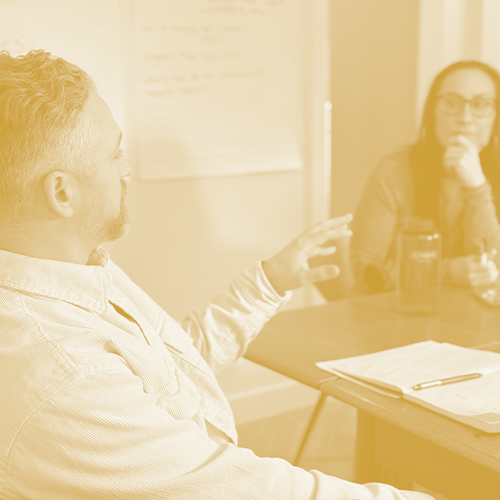

Leadership Coaching
that Builds Mindset and Capacity
Coaching is a structured, relational partnership that creates space for leaders to reflect, experiment, and grow in real time. Grounded in deep listening and thoughtful inquiry, it strengthens self-awareness and turns insight into everyday leadership practice.
Book a callIndividual coaching offers a confidential space to focus on your leadership.
We explore your presence, patterns, and choices. It’s especially valuable when you’re holding complexity, navigating authority, or aligning who you are with how you lead.
- A trusted coaching relationship rooted in inquiry and challenge
- Space to process complex dynamics and practice real-world scenarios
- Leadership skill development tailored to your unique context
- Typical engagement: eight to twelve 60-minute sessions over 6 months

Jenna provided exceptional leadership coaching during my campaign for the New York State Assembly. Her guidance not only bolstered my confidence but also pushed me to make the tough decisions that were crucial for my campaign’s success.

Coaching creates the space and structure to turn reflection into action through real-time experimentation and learning.
Leaders come to coaching when they:
- Sense new possibilities but can’t yet see the path forward
- Are navigating complex dynamics
- Want to lead with greater confidence
- Are in transition or facing recurring tension
- Care deeply about people and impact and want to lead sustainably
What coaching looks like in practice.
Coaching is collaborative and forward-leaning. It meets you in your real leadership context.
Together, we:
- Ask powerful questions rooted in your work
- Experiment, reflect, and adjust
- Integrate learning into day-to-day leadership
Coaching isn’t:
- Therapy or clinical support
- Consulting that hands you the answers
- Task-based training divorced from your context
Leadership coaching in practice.

Let’s figure out the right next step.
Book a chemistry call, or take our Healthy Leadership Survey to find out which service would best support you right now.